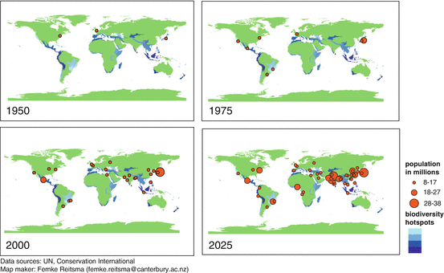
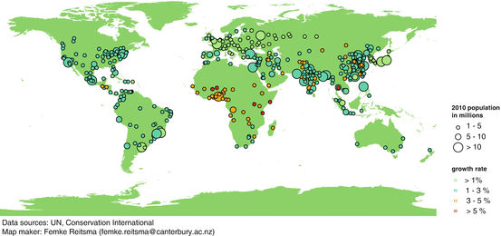

1.1 Introduction
This volume is based on the argument that, just as it is no longer possible to construct sound ecological science without explicit attention to urbanization as a key driver of global ecological change (Chaps. 3, 11, and 26), cities can no longer be uncoupled from a full understanding of their ecological foundations. The populations and economies of urban areas rely on hinterlands for resources, but there is a disconnect between using resources for urban areas and preserving or conserving ecosystem services that are outside of urban areas (Chaps. 2 and 3). While it is recognized that urban areas and urban dwellers will need to begin to take greater responsibility for stewardship of Earth’s resources (Seitzinger et al. 2012), urban sustainability efforts often are prone to localism, thus failing to take into account the need to conserve resources elsewhere (Seto et al. 2012a).
A history of disassociation of biodiversity, ecosystems, and urban development alongside a belief in technological solutions gave rise to a logic of urban planning that made it possible to imagine that the governance of urban life could be separated from the provision of food, water and other ecosystem services on which all human life depends (Chap. 2). As a result, urban areas today are both more tightly coupled to their ecological hinterlands than ever before and yet it is difficult for urban residents and their representatives to manage urbanization sustainably. This book is about the imperative of reconnecting cities to the biosphere; it explores a fresh understanding of the social-ecological foundation of cities and their sustainability, and details how this urban ecological embedding is being facilitated through a new and bold urban praxis.
1.2 Five Major Urban Trends
Throughout the book we will elaborate on five major trends in the urbanization process, which have implications for biodiversity and ecosystem services:
1.
The physical extents of urban areas are expanding faster than urban populations, suggesting that the world will require increasingly more land to build cities and supply urban consumption as urban populations continue to increase. In some urban areas that are shrinking in population or economic activity, new and emerging challenges are associated with vacant or abandoned land and buildings. Aggregated to the city level, the size of these unused areas can present new opportunities for vegetation regrowth and challenges for urban renewal.
2.
Urban areas modify their local and regional climate through the urban heat island effect and by altering precipitation patterns, which together will have significant impacts on net primary production, functions of ecosystems, and biodiversity.
3.
Expansion of built-up areas will draw heavily on natural resources, in particular water, timber, and energy. The continued outward growth of cities will often consume prime agricultural land, with knock-on effects on habitats, biodiversity and ecosystem services elsewhere.
4.
Urban land expansion is occurring fast in areas adjacent to biodiversity hotspots and faster in low-elevation, biodiversity-rich coastal zones than in other areas.
5.
Most future urban expansion will occur in areas of limited economic development and institutional capacity, which will constrain abilities to invest in the protection of biodiversity and the conservation and restoration of ecosystem services.
Here, in the introductory chapter, we will expand on trends 1 and 2 as a foundation for the coming chapters to elaborate on trends 3–5.
1.2.1 Trend 1: Urban Areas Are Expanding Faster Than Urban Populations
The global proportion of urban population was a mere 13 % in 1900 (UN 2006). It rose gradually to 29 % in 1950. If current trends continue, by 2050 the global urban population is estimated to be 70 % or 6.3 billion, nearly doubling the 3.5 billion urban dwellers worldwide in 2010 (UN 2010), and most of the growth is expected to occur in small and medium-sized cities, not in mega-cities (Chap. 21). Biodiversity and ecosystem services do not represent the immediate concern for the approximately 900 million people who live in slums with lack of basic services, substandard housing, and unhealthy living conditions (UN-Habitat 2003). At the same time, overall levels of urban residents’ consumption are rising, placing greater strain on the resource base and increasing the imperative to allocate natural assets fairly and equitably. While mega-cities are the focus of much attention, it is the medium-sized cities (with populations of 1–5 million) that will experience the fastest rates of urban growth, and in fact most of the world’s urban population will live in small cities of less than one million by 2050 (Chap. 21).
Urbanization is a complex and dynamic process playing out over multiple scales of space and time (Grimm et al. 2008a, b). Historically, cities have been compact and have concentrated populations. Today, cities are increasingly expansive. Across the world, urban areas are growing on average twice as fast as urban populations (Seto et al. 2011; Angel et al. 2011). In addition to being increasingly physically expansive, urban land change is also predominantly characterized by peri-urbanization, the process whereby rural areas both close to and distant from city centers become enveloped by, or transformed into, extended metropolitan regions (Simon et al. 2004; Aguilar et al. 2003). This results in a tight mosaic of traditional and agricultural juxtaposed with modern and industrial land-uses and governance systems (Chaps. 8 and 26). As a physical phenomenon, peri-urbanization involves the conversion of agricultural land, pastures, and forests to urban areas. As a social phenomenon, peri-urbanization involves cultural and lifestyle adjustments of agrarian communities as they become absorbed into the sphere of the urban economy. In developing countries, especially in Asia and Africa, peri-urbanization is the most prominent form of urban growth and urbanization, with different characteristics across countries and regions. As a result, emerging urbanizing regions represent probably the most complex mosaic of land cover and multiple land uses of any landscape (cf. Batty 2008a, b).
What Is Urban?
There is no general agreement on a definition of what is urban, and considerable differences in classification of urban and rural areas exist among countries and continents. Most comparative assessments use national definitions, even though these are not comparable measures. In Europe and North America, the urban landscape is often defined as an area with human agglomerations and with >50 % of the surface built, surrounded by other areas with 30–50 % built, and overall a population density of more than ten individuals per hectare. In other contexts, population size, the density of economic activity or the form of governance structure are used to delineate what is a town, city, or city region, but there
(continued)
is significant variation in the criteria for defining what is urban. In this book, we use a working definition of urbanization as a multidimensional process that manifests itself through rapidly changing human population and changing land cover. The growth of cities is due to a combination of four forces: natural growth, rural to urban migration, massive migration due to extreme events, and redefinitions of administrative boundaries.
Understanding and disaggregating the demographic transitions associated with the future urban world is an essential step in assessing the ecological impact of cities (Chap. 21). For now, in the absence of robust sub-national census information on migration or fertility, all the urban data need to be treated as indicative.
While everyone struggles to define exactly what is meant by a city, nobody negates the shifting patterns of urbanization or the overall growth of cities. In this volume we introduce the framework of cities as complex social-ecological systems (see Chaps. 2, 11, and 33), since they include much more than a particular density of people or area covered by human-made structures.
There is significant variation in urbanization across and within countries and it is important to recognize that there is no single “urban transition.” For example, Brazil’s urban population reached 36 % in 1950, whereas India’s urban population is currently at 31 %. In Russia, central planning led to a high proportion of large cities relative to small ones, and disproportionate urban primacy (Becker et al. 2012). Rates and periods of urbanization, cultural patterns of land use and the biophysical conditions that urban managers face vary tremendously.
Although cities have existed for centuries, the urbanization processes today are different from urban transformations of the past in significant ways, the most important of which are:
(1) the scale, (2) the rate and (3) the shifting geography of urbanization.
1.
The scale of urbanization is unparalleled in terms of urban population size, urban extent, and the sheer number of large urban areas (Seto et al. 2010). Today’s cities are bigger than those at any other time in history in terms of their populations. In 1900, there were no cities with a population of ten million. Today, there are 19 urban agglomerations with populations of ten million or more; Tokyo-Yokohama has a population of nearly 40 million (see Fig. 1.1). Urban areas have also become extraordinarily large in physical size. The urban extent of Tokyo-Yokohama covers 13,500 km2, an area that is bigger than Jamaica (11,000 km2). The number of large cities is also unparalleled. At the start of the 1800s when the world population was around one billion, Beijing was the only city with a population of one million. Today, there are nearly 400 cities with populations of over one million.

Fig. 1.1
Global urbanization and biodiversity hotspots, 1950–2025. For a definition of hotspots, see Chap. 22 (Reproduced from Secretariat of the Convention on Biological Diversity 2012, p. 8. Prepared by and published with kind permission of © Femke Reitsma 2012. All rights reserved)
2.
The rate of urbanization is a major characteristic of this century. It took all of history until 1960 for the world urban population to reach one billion, but only 26 additional years to reach two billion. In cities and towns across the developing world, the growth of urban population translates into everyday challenges for city managers and residents as they seek to ensure the physical infrastructure and resource supplies on which new urban residents’ livelihoods will depend. While some aspects of household security and economic opportunity can be achieved through individual effort, living in a city inevitably implies some dependence on collective organization. There is considerable debate on how much government or what form of government is most appropriate to a sustainable city and even how government should work with others to enable intergenerational urban opportunity while protecting the environment (Chap. 27). As several of the forthcoming chapters and the city case studies illustrate, significant energy and commitment is being directed toward finding ways to work together to reconfigure the governance of cities, city regions and the network of cities in ways that enhance rather than detract from Earth’s biodiversity.
3.
The geography of urbanization is shifting. The world’s 20 fastest-growing urban regions are in Asia and Africa, not Europe or North America (Chaps. 4, 13, 14, 15, and 28). The urban transition in Europe and South America occurred in the 1950s through the 1970s (Chaps. 13, 14, 15, and 28). Urban growth in the coming decades will take place primarily in Asia (China and India in particular) (Chaps. 4, 5, and 6) and in Africa (especially Nigeria) (Chap. 23) and expand into farmland, forests, savannas and other ecosystems. Whereas the urbanization levels in the Americas and Europe are already high—80 % in South America and 75–78 % in Europe and North America—the urban populations on the continents of Africa and Asia are less than 40 % of total population. Over the next two decades, while the rural population will also rise, the urban populations of both continents are expected to increase to more than 50 %, and parts of Africa and Asia will have urban growth rates of more than 5 % (Fig. 1.2). The location of urban land change will parallel these changes in population growth. China and India will experience significant expansion of urban built-up area, as will Nigeria (Chap. 21). A majority of these new urban residents will be relatively poor, with estimates that between one-quarter and one-third of all urban households in the world will live in absolute poverty (UNEP 2002).

Fig. 1.2
Predicted urban growth from 2010 to 2025 for cities that have a population of greater than 1 million people in 2010 (Reproduced from Secretariat of the Convention on Biological Diversity 2012, p. 12. Prepared by and published with kind permission of © Femke Reitsma 2012. All rights reserved)
When analyzing the most vulnerable areas, it is clear that coastal ecozones are important and predominantly urban (McGranahan et al. 2005, 2007), and in particular are home to the largest cities. Globally, approximately 400 million people live within 20 m of sea level and within 20 km of a coast (Small and Nicholls 2003). Many large cities occupy coastal locations that are flood prone and vulnerable to extreme events, although there is a wide range in the distribution of vulnerability across cities and even among different communities within cities (Parnell et al. 2007). Hurricane Sandy in 2012 and the Asian tsunami in 2004 showed that all cities—even those in wealthy countries—are vulnerable to disasters and extreme climate events, and that coping capacity and resilience differ significantly among cities. In cities of the developing world, adapting to increased risk is understandably more difficult, not just due to the limits on resources. In many African and Asian cities and towns, local officials rarely have full knowledge of, or control over, the evolving urban form because planning and enforcement capacity is weak or illegitimate (Chaps. 7, 8, 24, and 29). High levels of informality in urban areas may even make parts of the city impenetrable, compounding vulnerability and precluding the use of ecosystem based adaptation to risk.
Despite the importance of urbanization as a defining trend in the twenty-first century, we lack critical information and data about urban areas and urbanization processes. For example, while the UN World Urbanization Prospects publications provide country-level information on the percentage of populations in urban areas, they do not supply intra-country variations of urban population distribution, the location of urban areas, or changes in urban areas (for a detailed discussion on themes that appear in debates over data and methodologies utilized for generating global population projections, see Box 21.1). Furthermore, information about quality of life and basic socioeconomic variables such as education and equity are not available or collected across cities in a systematic fashion. There have been recent efforts to develop comparable city and urban indicators that measure a range of urban services (e.g., Global City Indicators Facility, UN Global Urban Indicators), but these efforts are only now underway and developing time series will take years in the making. Even so, additional challenges are presented in that these undertakings tend to represent larger cities rather than all cities and towns.
1.2.2 Trend 2: Urban Areas Modify Their Local and Regional Climate
Cites are not just subjected to risk, they are also drivers of changes in climate and ecosystems. Land-cover changes associated with urbanization have considerable impacts on temperature and precipitation in and around urban areas (Seto and Shepherd 2009). The most studied manifestation of urban modification of regional climate is the urban heat island (UHI). The conversion of vegetated surfaces to hardmade surfaces modifies the exchange of heat, water, trace gases, and aerosols between the land surface and overlying atmosphere (Crutzen 2004); this leads to the “urban heat island effect,” characterized by elevated daytime and nighttime temperatures in and near urban areas (Oke 1974; Arnfield 2003) compared to surrounding regions. The urban heat island effect has been documented for nearly 100 years (Howard 1833) and is affected by the shape, size, and geometry of buildings as well as the differences in urban and rural gradients. The role of the urban heat island in regional climate has been the subject of numerous investigations. However, the impact of urbanization on regional climate extends well beyond the UHI. The concentration of activities (e.g., transport, industrial production) in urban areas produces patterns of aerosols, pollution, and carbon dioxide that are more highly concentrated in urban areas than in non-urban, rural areas (Pataki et al. 2007). Aerosols affect regional climate by scattering, reflecting, or absorbing solar radiation. Whether aerosols produce a cooling or warming effect depends on the aerosols in question: sulfates produce a cooling effect while carbon-based aerosols produce a warming effect. There is mounting evidence that urbanization affects precipitation variability, a phenomenon described as an “urban rainfall effect” (Shem and Shepherd 2009). In some parts of the world there is an observed increase in regional precipitation due to urbanization, while in other regions there is a measurable decline in precipitation.
In addition to the UHI and urban rainfall effects, urbanization significantly affects terrestrial carbon cycle by reducing net primary productivity (NPP). In China, regional annual primary production decreased by 14 % during the 1991–2001 period (Xu et al. 2007) and in some localized cases in South China, resulted in an average annual reduction of 45.93 Gg of carbon (Deyong et al. 2009). In the United States, NPP losses from urbanization alone are roughly equivalent to about 6% of the annual caloric requirement of the U.S. population (Imhoff et al. 2004).
1.2.3 Trend 3: Urbanization Increases Demands on Natural Resources
Urban expansion affects the demand for natural resources required for the construction and operation of built environments. Studies show that increases in energy and material use efficiencies at the building scale can substantially reduce energy consumption and resource demand (Gustavsson and Sathre 2006; Fernández 2007). These studies emphasize technological and efficiency improvements, but neglect the scale and spatial configuration of urban land use. At the metro region scale, there is emerging consensus that compact urban development can reduce demand for raw materials from buildings and infrastructure (Wheeler 2003; Sovacool and Brown 2010). Studies that examine both improvements in efficiency and scale of urbanization show that gains in efficiency at the building scale are often overshadowed by the sheer magnitude of urban expansion (Güneralp and Seto 2012). Moreover, changes in lifestyles and consumption patterns associated with urbanization, especially increasing demand for residential energy and water, is placing dramatic pressures on ecological services (Hubacek et al. 2009).
1.2.4 Trend 4: Urban Expansion Is Increasing Near Biodiversity Hotspots
By 2030, new urban expansion will take up an additional 1.8 % of all biodiversity hotspot areas (Seto et al. 2012b). Case studies from around the world show that urban expansion in and near critical habitats is ubiquitous both in developing and developed countries (Wang et al. 2007; Pauchard et al. 2006) (Fig. 1.1). Almost 90 % of the protected areas likely to be impacted by future urbanization are in rapidly developing low- and moderate-income countries (McDonald et al. 2008). Five biodiversity hotspots are forecasted to have the largest percentage increase in adjacent population and highest probability of becoming urbanized by 2030: the Guinean forests of West Africa, the Caribbean Islands, Japan, the Philippines, and the Western Ghats and Sri Lanka (Seto et al. 2012b). Worldwide, 32,000 km2 of protected areas were urbanized circa 2000, representing 5 % of global urban land (Güneralp and Seto 2013). In Europe, where there is an extensive protected area network, more than 19,000 km2 of protected areas were urbanized circa 2000. That is, 13 % of the total urban land in Europe was located in protected areas. China and South America also had substantial amounts of urban land within their protected areas with 4,500 and 2,800 km2, respectively (i.e., 6 and 3.5 % of their respective urban lands).
Recent analyses show that there will be substantial growth in urban land across the world near protected areas in the next couple of decades (Fig. 1.1). In general, the largest increases in the amount of urban land near protected areas are forecasted in developing countries and emerging economies. The greatest increases in urban land around the protected areas will take place in China with the amount of urban land increasing as much as three to seven times over 30 years (Güneralp and Seto 2013) (Chap. 5).
1.2.5 Trend 5: Urbanization Influences the (Green) Economy
There is an evident trend towards economic reasoning in the sustainability agenda, although clearly not all dimensions of a city’s ecology can (or should) be expressed in monetary terms or in terms of fiscal risk or economic return (Chap. 11). There is some concern that the green agenda, in which biodiversity and climate change are key drivers, has become dominated by an economic rationale (Marvin and Hodgson 2013). Nevertheless, across the cities of the world, governments and private developers have turned increasingly to defining economic value of ecosystem services in hopes to drive a greater integration of ecological principles of urban design, construction and management.
What is meant by ‘the green urban economy’ is deeply influenced by context. At a very general level it is possible to detect three overlapping tendencies in the green economy agenda that relate directly to how urban biodiversity challenges are understood. First, as the dependent relationship between the quality of the natural environment of cities and the quality of urban life and urban livelihoods becomes more apparent, the economic value of biodiversity becomes more obvious, but the means for raising revenue to protect these ecological amenities for public access often remain opaque. Second, austerity and the social desire to reignite the economy, especially in Europe and North America, has placed expectations of growth on the introduction of green economic innovations (Marvin and Hodgson 2013). More generally, but especially in the growing cities of Asia and Africa, the economic anticipation of a bigger emphasis on urban biodiversity and ecosystem services extends beyond the trend of green construction and incorporates also the growth of green production, distribution and consumption.
Third, for cities in the global south, the urban management of ecological resources, even when there are potential returns on investment, is complicated because both urban management capacity and revenues are limited. But the problem is not only local, raising significant governance problems. In China and regions of India, international capital, especially multi-national corporations, international real estate developers and property management firms have become major actors in shaping local patterns of development (Seto et al. 2010), and the influx of international capital also increasingly affects local urban consumption patterns (Davis 2005).
1.3 Cities and Their Dependence on the Biosphere
After decades of mutual neglect and an artificial divide between nature on the one hand, and cities on the other hand, there is now a shift in ecological science to include urban places as integrated components of long-term resilience (Chaps. 17, 18, and 19). Urban planners are also increasingly acknowledging that cities have an important role as stewards of the ecosystems on which they depend and that functioning natural systems such as watersheds, mangroves, and wetlands are indispensable for supporting health and vibrant livelihoods as well as reducing urban vulnerabilities to natural disasters. This will be the theme of much of the rest of the book, starting with a historical overview of how the urban disconnection from the biosphere gradually emerged and accelerated, followed by a look at more contemporary efforts that have begun to reconnect cities to the ecosystems upon which they depend.
References
Aguilar, A. G., Ward, P. M., & Smith, C. B., Sr. (2003). Globalization, regional development, and mega-city expansion in Latin America: Analyzing Mexico City’s peri-urban hinterland. Cities, 20(1), 3–21.CrossRef
Angel, S., Parent, J., Civco, D. L., Blei, A., & Potere, D. (2011). The dimensions of global urban expansion: Estimates and projections for all countries, 2000–2050. Progress in Planning, 75(2), 53–107.CrossRef
Arnfield, A. J. (2003). Two decades of urban climate research: A review of turbulence, exchanges of energy and water, and the urban heat island. International Journal of Climatology, 23(1), 1–26.CrossRef
Batty, M. (2008b). Cities as complex systems: Scaling, interactions, networks, dynamics and urban morphologies (UCL Working Paper Series 131). UCL Centre for Advanced Spatial Analysis, London. ISSN 1467-1298.
Becker, C. M., Mendelsohn, S. J., & Benderskaya, K. A. (2012). Russian urbanization in the Soviet and post-Soviet eras. International Institute for Environment and Development, 1–128.
Crutzen, P. P. J. (2004). New directions: The growing urban heat and pollution ‘island’ effect: Impact on chemistry and climate. Atmospheric Environment, 38(21), 3539–3540.CrossRef
Davis, D. (2005). Urban consumer culture. The China Quarterly, 183, 677–694.CrossRef
Deyong, Y., Hongbo, S., Peijun, S., Wenquan, Z., & Yaozhong, P. (2009). How does the conversion of land cover to urban use affect net primary productivity? A case study in Shenzhen city, China. Agricultural and Forest Meteorology, 149(11), 2054–2060.CrossRef
Grimm, N. B., Foster, D., Groffman, P., Grove, J. M., Hopkinson, C. S., Nadelhoffer, K. J., Pataki, D. E., & Peters, D. P. (2008b). The changing landscape: Ecosystem responses to urbanization and pollution across climatic and societal gradients. Frontiers in Ecology and the Environment, 6(5), 264–272.CrossRef
Güneralp, B., & Seto, K. C. (2012). Can gains in efficiency offset the resource demands and CO2 emissions from constructing and operating the built environment? Applied Geography, 32(1), 40–50.CrossRef
Güneralp, B., & Seto, K. C. (2013). Futures of global urban expansion: Uncertainties and implications for biodiversity conservation. Environmental Research Letters, 8, 014025. doi:10.1088/1748-9326/8/1/014025.CrossRef
Gustavsson, L., & Sathre, R. (2006). Variability in energy and carbon dioxide balances of wood and concrete building materials. Building and Environment, 41(7), 940–951.CrossRef
Howard, L. (1833). The climate of London deduced from meteorological observations made in the metropolis and at various places around it (2nd ed.). London: J. and A. Arch.
Hubacek, K., Guan, D., Barrett, J., & Wiedmann, T. (2009). Environmental implications of urbanization and lifestyle change in China: Ecological and water footprints. Journal of Cleaner Production, 17(14), 1241–1248.CrossRef
Imhoff, M. L., Bounoua, L., DeFries, R., Lawrence, W. T., Stutzer, D., Tucker, C. J., & Ricketts, T. (2004). The consequences of urban land transformation on net primary productivity in the United States. Remote Sensing of Environment, 89(4), 434–443.CrossRef
Marvin, S., & Hodgson, M. (2013). Green cities position paper. Gothenburg: Mistra Urban Futures.
McDonald, R. I., Kareiva, P., & Forman, R. T. T. (2008). The implications of current and future urbanization for global protected areas and biodiversity conservation. Biological Conservation, 141(6), 1695–1703.CrossRef
Oke, T. R. (1974). Review of urban climatology, 1968–1973 (WMO Technical Note No. 134, WMO No. 383). Geneva: World Meteorological Organization.
Parnell, S., Simon, D., & Vogel, C. (2007). Global environmental change: Conceptualising the growing challenge for cities in poor countries. Area, 39(3), 357–369.CrossRef
Pataki, D. E., Xu, T., Luo, Y. Q., & Ehleringer, J. R. (2007). Inferring biogenic and anthropogenic carbon dioxide sources across an urban to rural gradient. Oecologia, 2007(152), 307–322.CrossRef
Pauchard, A., Aguayo, M., Peña, E., & Urrutia, R. (2006). Multiple effects of urbanization on the biodiversity of developing countries: The case of a fast-growing metropolitan area (Concepción, Chile). Biological Conservation, 127(3), 272–281.CrossRef
Seitzinger, S. P., Svedin, U., Crumley, C. L., Steffen, W., Abdullah, S. A., Alfsen, C., Broadgate, W. J., Biermann, F., Bondre, N. R., Dearing, J. A., Deutsch, L., Dhakal, S., Elmqvist, T., Farahbakhshazad, N., Gaffney, O., Haberl, H., Lavorel, S., Mbow, C., McMichael, A. J., deMorais, J. M. F., Olsson, P., Pinho, P. F., Seto, K. C., Sinclair, P., Smith, M. S., & Sugar, L. (2012). Planetary stewardship in an urbanizing world: Beyond city limits. AMBIO: A Journal of the Human Environment, 41, 787–794.CrossRef
Seto, K. C., & Shepherd, J. M. (2009). Global urban land-use trends and climate impacts. Current Opinion in Environmental Sustainability, 1(1), 89–95.CrossRef
Seto, K. C., Sánchez-Rodríguez, R., & Fragkias, M. (2010). The new geography of contemporary urbanization and the environment. Annual Review of Environment and Resources, 35, 167–194.CrossRef
Seto, K. C., Reenberg, A., Boone, C. G., Fragkias, M., Haase, D., Langanke, T., Marcotullio, P., Munroe, D. K., Olah, B., & Simon, D. (2012a). Urban land teleconnections and sustainability. Proceedings of the National Academy of Sciences, 109(20), 7687–7692.CrossRef
Shem, W., & Shepherd, M. (2009). On the impact of urbanization on summertime thunderstorms in Atlanta: Two numerical model case studies. Atmospheric Research, 92, 172–189.CrossRef
Simon, D., McGregor, D., & Nsiah-Gyabaah, K. (2004). The changing urban-rural interface of African cities: Definitional issues and an application to Kumasi, Ghana. Environment and Urbanization, 16(2), 235–248.
Small, C., & Nicholls, R. J. (2003). A global analysis of human settlement in coastal zones. Journal of Coastal Research, 19(3), 584–599.
Sovacool, B. K., & Brown, M. A. (2010). Twelve metropolitan carbon footprints: A preliminary comparative global assessment. Energy Policy, 38(9), 4856–4869.CrossRef
UNEP. (2002). State of the environment and policy retrospective:1972–2002.
UN-HABITAT. (2003). The challenge of slums: Global report on human settlements 2003. London: Earthscan Publications.
United Nations. (2006). World urbanization prospects: The 2005 revision. New York: United Nations.
United Nations. (2010). World urbanization prospects: The 2009 revision. New York: United Nations.
Wang, G., Jiang, G., Zhou, Y., Liu, Q., Ji, Y., Wang, S., et al. (2007). Biodiversity conservation in a fast-growing metropolitan area in China: A case study of plant diversity in Beijing. Biodiversity and Conservation, 16(14), 4025–4038.CrossRef
Wheeler, S. M. (2003). The evolution of urban form in Portland and Toronto: Implications for sustainability planning. Local Environment, 8(3), 317–336.CrossRef